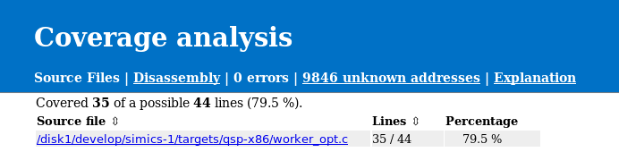
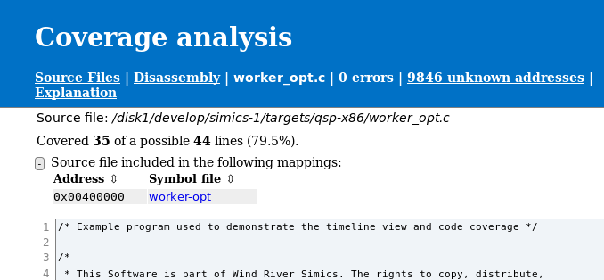
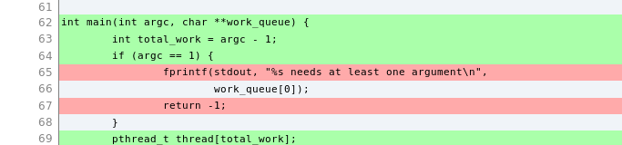
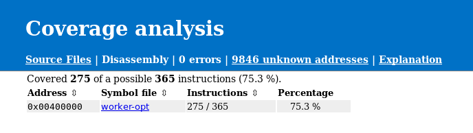
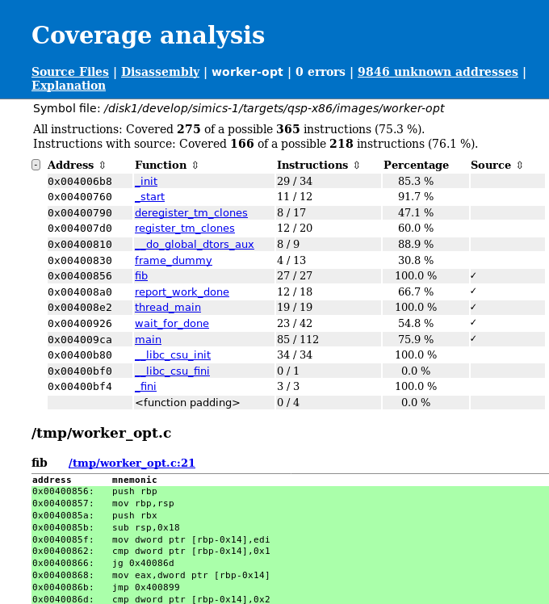
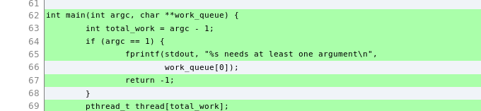

In this chapter we will look into how code coverage can be collected and how the HTML report will look like. We will look at two different examples, one where we run code coverage for a Linux user space program and one where we run code coverage for a UEFI system.
The most basic use case is to collect coverage and generate a code coverage report in the same run.
For this example, we will use the firststeps machine that comes with the QSP-x86 package. First we upload the worker-opt binary to the target system. The Linux image used by the firststeps machine is already configured to have the simics-agent application running. We will use it to transfer files to the simulated machine.
Please boot the targets/qsp-x86/firststeps.simics target system and then issue the following commands inside Simics:
simics> $worker_opt_file = (lookup-file "%simics%/targets/qsp-x86/images/worker-opt")
simics> $agent = (start-agent-manager)
simics> $handle = ($agent.connect-to-agent)
simics> $handle.upload -executable $worker_opt_file /root
simics> $handle.run-until-job
Before we can start collecting code coverage we need to enable the Linux tracker and set up symbol file information.
simics> board.software.enable-tracker
simics> add-symbol-file $worker_opt_file context-query = "'worker-opt'"
The collect-coverage command is used to start collecting code coverage data from the simulation. The collect-coverage command takes a context query for which to collect coverage.
We will start collecting code coverage for the next created context that matches our context query. For more information about the available options, see the built-in help.
simics> $cc = (collect-coverage context-query = "'worker-opt'")
It is finally time to run the test program. This can be done by inputting the command on the target console and then running the simulation until the program completes.
./worker-opt 5 8 10
Depending on where the file were compiled, we may have to add a path map. Since "%simics%" may return the path from any package or project we give the exact file name here. However, normally only the directory needs to be provided.
simics> $cc.add-path-map "/tmp/worker_opt.c" "%simics%/targets/qsp-x86/worker_opt.c"
When the program has finished, or when the test case of interest is completed it is time to generate a coverage report. Again, there are many options for how to generate the HTML report available, see the built-in help for more details.
simics> $cc.html-report coverage-report
If we use a web browser to open index.html located in coverage-report directory, we will see something like figure 16.
The current page shows all known source files that were used to compile the program, in this case the worker_opt.c file. We can also see the number of executed lines and how many executable lines there are; together with a ratio, given in percentage. This is shown both in total and per file.

If we follow the link to the worker_opt.c file, we are provided much more details about that particular file. First, there is a short summary about the coverage, where we can see how much coverage it is for this source file and from which mappings it was referenced, see figure 17. This is followed by the entire source file, an excerpt of the worker_opt.c is shown in figure 18. The source file is marked with green if a line was executed and red for executable lines that were not executed. Lines that are grey are not executable, this includes comment, lines that were optimized away and parts of multiline expressions. Remember that the quality of the source to instruction mapping is heavily dependent on compiler optimization level. A line will be counted as executed if at least one instruction that has been executed has a mapping to the source line in question.


To get information on disassembly level we can click the Disassembly link in the header. This will take us to the disassembly overview page as seen in figure 19. This contains an overview of how many instructions the program consists of and how many of those that were executed. See the Explanation page for information and limitations about disassembly information.

To get even more details about the exact instructions that has been run, we can follow the link to the worker_opt binary, see figure 20. At the top of the page, there is a summary with details about how many instructions that were executed followed by a table with known functions addresses and how much coverage each function has. There is also a source indication if there is a known source file for the particular function. Further down, the entire disassembly is available. Again, executed instructions are marked with green and instructions that has not been executed are marked with red. It is also possible to get the number of times an instruction has been executed and if a branch instruction has been taken or not. To enable this, see the built-in help for the collect-coverage command. Again the Explanation page provides more details about how such information is presented in the report.

To demonstrate that it is possible to combine coverage from multiple runs we will save a raw coverage report as well. This is done with the save command.
simics> $cc.save worker-opt.cc
We will now start a second coverage collection, by using the collect-coverage command.
simics> $cc2 = (collect-coverage context-query = "'worker-opt'")
Again, we may have to setup a path map.
simics> $cc2.add-path-map "/tmp/worker_opt.c" "%simics%/targets/qsp-x86/worker_opt.c"
To be able to see the difference we will start the worker-opt program without any input argument this time. And run until the program has finished.
simics> board.serconsole.con.input "./worker-opt\n"
We can now add the previously saved coverage data to the currently gathered data. This is done with the add-report command.
simics> $cc2.add-report worker-opt.cc
To create a new html report we use the html-report command again, this time for the second code coverage object.
simics> $cc2.html-report coverage-report-2
We can now compare the source code coverage for the two runs. In the first run, see figure 18, line 65 and 67 have not been executed. In the second report, see figure 21, we can see that line 65 and 67 have been executed. This is expected as we provided too few arguments to the program. However, we can also see that line 69 has been executed. This is because we have combined the coverage from the two runs.

Collecting code coverage for a UEFI system is fairly easy, given you have already configured the UEFI FW tracker. For more details about the tracker, see section 2.16. This example assumes that the name of the platform is viper.
First we enable the tracker.
simics> board.software.enable-tracker
Now we need to find out how to write the context query to match the root context. We can do this by listing all debug contexts and then create a context query that matches the UEFI FW tracker's root context.
simics> list-debug-contexts
We can now see that the debug context we are interested in is /board/software/UEFI System/UEFI Firmware. We can make a simple context query based on the name.
To start collecting coverage we use the collect-coverage command.
simics> $cc = (collect-coverage context-query = "'UEFI Firmware'")
After the code coverage collection has started it is time to start the simulation and run the UEFI system up to the point we are interested in gathering code coverage for.
If the UEFI FW build is unavailable at the path it was built, then code coverage will require adding a path-map to its present location. This can be set by using the per code coverage object command, add-path-map. It is also possible to use the global add-pathmap-entry command as long as the context on which code coverage is collected has not yet been destroyed (which will never happen in the UEFI case).
simics> $cc.add-path-map "c:\\uefi\\uefi-testfiles-build.git\\uefi-edk2-simics.git" /path/to/uefi/build
We can now create the HTML report, since the UEFI FW tracker provides all mappings to UEFI modules there is no need to set up those manually.
simics> $cc.html-report uefi-report